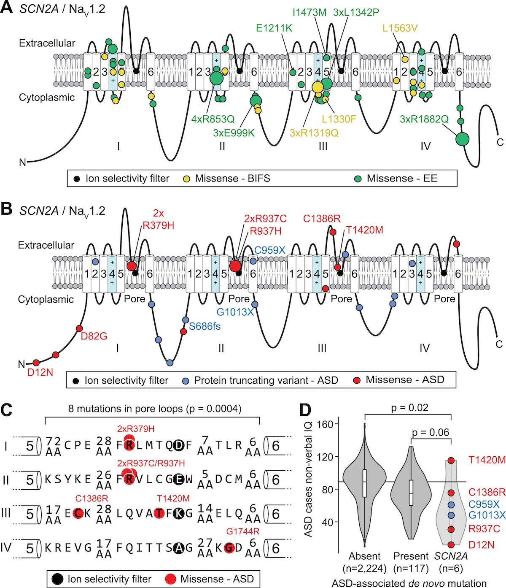
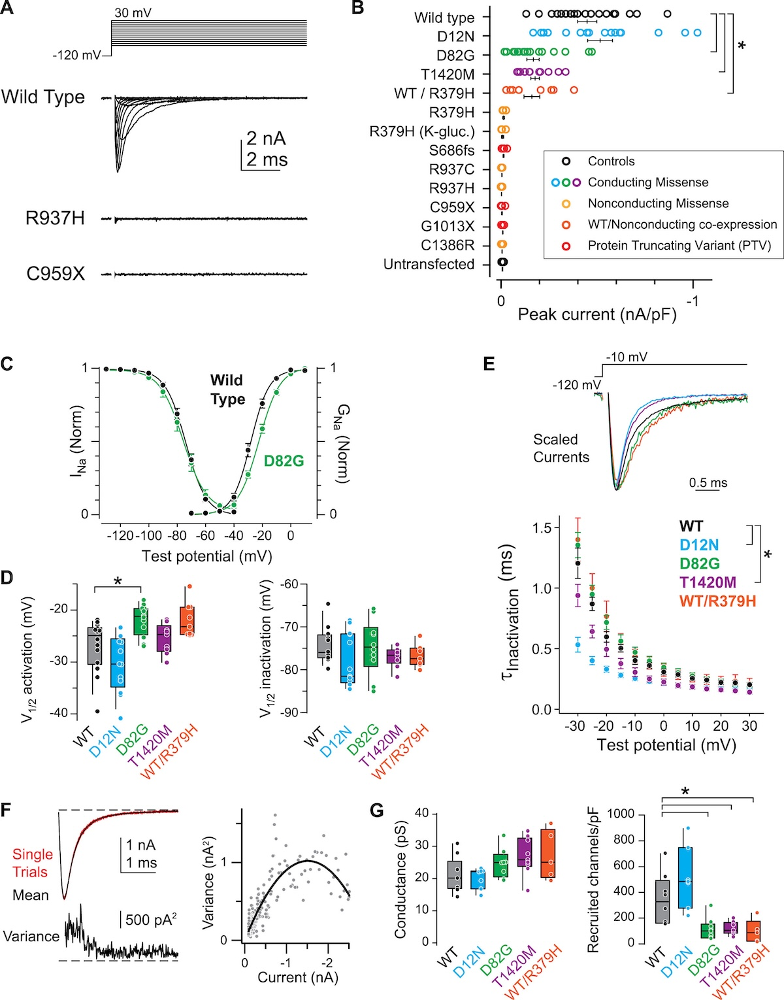
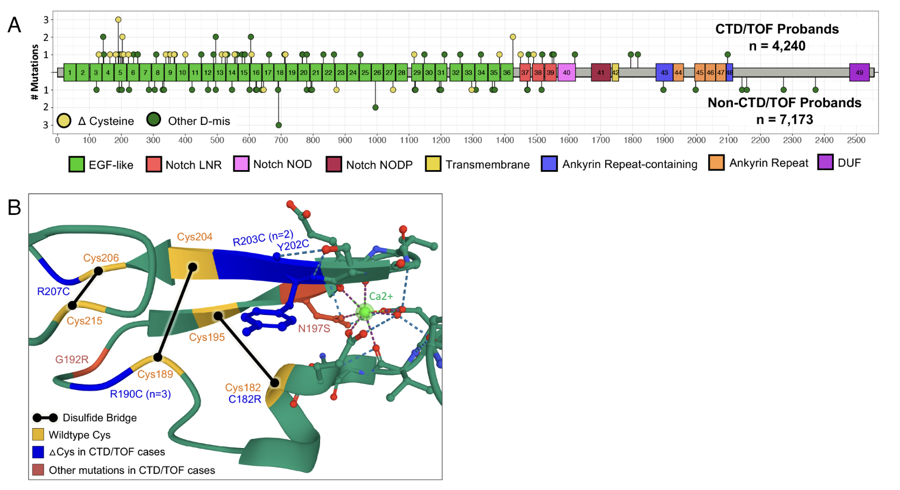
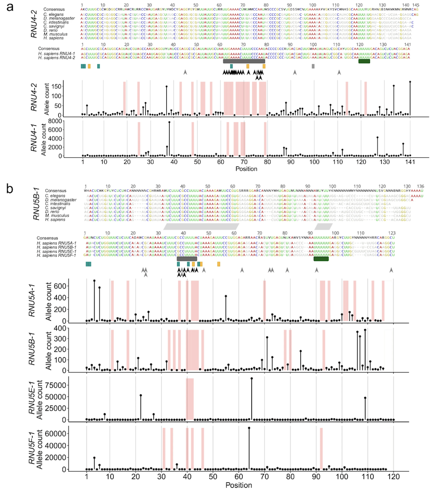

BSMS205 · Genetics
Dominant Alleles
Chapter 10 · Part II · Variation
Welcome to Chapter ten. Last time, in Chapter nine, we walked through how variants are transmitted from parent to child — recombination, segregation, the rules of inheritance. Today we ask the next question: what happens when one bad copy is enough to break things? That is what dominant inheritance means in medical genetics. We will spend this lecture on the molecular mechanisms — haploinsufficiency, dominant-negative, gain of function — and we will use one gene, S C N two A, as the through-line example, because it is one of the cleanest demonstrations in all of human genetics that the same gene can cause opposite diseases depending on how it is broken.
Bridge from Chapter 9
We know how variants spread .one bad copy
Here is the pivot from last lecture to this one. Chapter nine covered transmission — how a variant moves from a parent to a child through meiosis, segregation, and the recombination of chromosomes. That tells us how variants spread through families and populations. But it does not tell us when a variant actually causes disease. Today's question is sharper: under what conditions is a single mutant copy of a gene enough to make someone sick? That is the definition of a dominant disorder, and the answer is far more interesting than Mendel's purple-versus-white peas.
Mendel's dominance vs medical dominance
Mendel
One allele masks the other
About visible traits
Purple over white
Medical genetics
One mutant copy → disease
Other copy is normal
Disease in a heterozygote
When you hear "dominant" in genetics class, you probably think of Mendel's peas — one allele masking another in a visible trait. In medical genetics the word means something more specific. A dominant disease allele is one where a single mutant copy is sufficient to cause the disease, even when the other copy of the gene is perfectly normal. The patient is a heterozygote — one mutant, one normal — and the mutant copy wins. That is the regime we live in for today's lecture.
The central question
Why does one bad copy
Here is the question the rest of the lecture answers. Why is one mutant copy enough? After all, you still have a normal copy. Why does the cell not just compensate? The answer turns out to depend on the specific molecular mechanism — and there are at least three distinct ones, each with a very different cellular logic. We will go through them in order, and then we will see them in action across four real disorders.
Roadmap for today
Two variant types · PTVs and missense
Three molecular mechanisms
Kabuki syndrome · haploinsufficiency
SCN2A · same gene, opposite phenotypesCongenital heart disease · 60 dominant genes
ReNU syndrome · non-coding dominance
Variant → phenotype · the central dogma path
Here is how we move today. First, two flavors of mutation that dominate the literature — protein-truncating variants and missense variants. Second, the three molecular mechanisms that make a single mutant copy sufficient. Third through sixth, four worked examples, each illustrating a different mechanism. And finally we will trace the path from variant to phenotype through the central dogma. The S C N two A case in section four is the highlight — the same gene causing autism when broken one way and seizures when broken another way. It is one of the cleanest stories in human genetics.
A motivating fact
~20%
of severe pediatric disease · de novo dominant
New mutation · not in either parent
One copy is enough to cause disease
Why so many of them are caught only in WES
One number to anchor today's lecture. Roughly twenty percent of severe pediatric disease cases are caused by de novo dominant mutations — brand new mutations that arose in the affected child and were absent in both parents. That fraction is the reason whole exome sequencing has been so transformative in pediatric medicine. You cannot inherit something neither parent has, so you only catch these by sequencing the child directly. We will see de novo mutations again and again in the four examples that follow.
§ 1
Two Variant Types
Before we get to mechanism, we need to know what kinds of mutations cause dominant disease. Two categories cover the vast majority. Protein-truncating variants — which chop a protein short. And missense variants — which swap one amino acid for another. Each has its own logic, and they tend to cause disease through different mechanisms.
Protein-truncating variants · PTVs
Nonsense · a codon → premature stopFrameshift · indel shifts the reading frameResult: truncated, useless protein
Usually causes haploinsufficiency
One copy makes nothing useful.not enough .
Protein-truncating variants — P T Vs — chop a protein short. Two flavors. A nonsense mutation changes a codon for an amino acid into a premature stop codon, like turning a green light into a red light halfway through translation. A frameshift mutation is an insertion or deletion that is not a multiple of three, which scrambles the reading frame and produces gibberish downstream, almost always landing on a premature stop. Either way, you get a truncated, usually nonfunctional protein. The cell is left with output from one good copy. For dose-sensitive genes, that is not enough. We call this haploinsufficiency.
Missense variants
One codon → different amino acid
Effect depends on where and which
Some are harmless · others are devastating
Can cause gain-of-function or dominant-negative
Missense variants are subtler. A single codon changes — say, G A A becomes G C A — swapping glutamic acid for alanine. Sometimes that is harmless. Sometimes it is devastating. The effect depends on where the change sits in the protein and which amino acids are involved. Conserved residues in active sites are bad places to change. The crucial point for today is that missense variants are flexible — they can produce a protein that does too little, too much, or the wrong thing entirely. That gives them three possible mechanisms of dominance, which we are about to walk through.
How we find them · WES + filtering
WES covers protein-coding regions · ~1-2% of genomeFilter: keep only rare variants (frequency < 10⁻⁵)
For missense: SIFT , PolyPhen predict damage
de novo filter: present in child, absent in both parents
How do we actually find these dominant variants in a patient? The standard pipeline today is whole exome sequencing — W E S — which covers the protein-coding regions, about one to two percent of the genome but the part where most disease-causing mutations sit. Then we filter. We throw out anything common, because if a variant causes serious disease, it should not be common in healthy people. We typically use a frequency cutoff around ten to the minus five — one in one hundred thousand, or rarer. For missense variants, we use prediction tools like S I F T and PolyPhen that score how damaging the amino acid change is likely to be. And for de novo mutations specifically, we sequence the child and both parents — if the variant is in the child but absent from both parents, it is brand new.
§ 2
Three Molecular
Now to the heart of today's lecture. There are three fundamental mechanisms by which one mutant copy can cause disease, and you should be able to name and distinguish all three. Haploinsufficiency. Gain of function. Dominant negative. Each makes a different cellular bet, and each tends to come from a different kind of mutation. Let's go.
Mechanism 1 · Haploinsufficiency
One copy is broken · the other is fine
Half the protein is not enough
Typical cause: PTVs (nonsense, frameshift)
Hits dose-sensitive genes
Half a dose, half a function — but the cell needs full .
Mechanism one — haploinsufficiency. One copy is broken and produces no useful protein. The other copy is fine, but on its own it cannot make enough product to keep things running. Think of a developmental gene where the cell needs full protein levels at a critical window — half a dose just is not enough. Most of the gene is not even expressed from the broken allele, or what is expressed is degraded. The hallmark mutation type is a P T V — nonsense or frameshift — because P T Vs reliably eliminate the broken copy's contribution. We are going to see this in Kabuki syndrome in a few slides.
Mechanism 2 · Gain of function
Mutant protein gains a new, harmful activity
Or: it is hyperactive — too much of the right thing
Typical cause: missense variant in regulatory region
Normal copy cannot rescue — mutant adds, not subtracts
Mechanism two — gain of function. Here the mutant protein does not just lose function. It gains a new function, or it does the right thing too vigorously. Imagine an ion channel whose mutant version stays open too long, or opens too easily. The cell does not have a problem of too little — it has a problem of too much. The normal copy cannot rescue this, because the mutant is adding pathological activity rather than subtracting normal activity. Gain-of-function mutations are usually missense variants that hit a regulatory region of the protein. We will see this in S C N two A causing seizures.
Mechanism 3 · Dominant-negative
Mutant protein interferes with the normal one
Defective subunit poisons the complex
Typical cause: missense in protein-protein interface
Common in multimeric proteins (collagen, NOTCH)
Mechanism three — dominant negative. The mutant protein is itself defective, but worse, it interferes with the normal protein from the good allele. The classic case is a multimeric protein — like collagen, where three chains wrap around each other, or N O T C H one, which signals through complexes. If the mutant subunit gets incorporated into the complex along with normal subunits, the whole complex misfolds or fails to signal. One bad apple spoils the bunch. So even though you still have plenty of normal protein, the cellular output is wrecked. This is why dominant-negative is often more severe than simple haploinsufficiency.
Three mechanisms compared
Mechanism What changes Typical mutation Example
Haploinsufficiency Half the protein PTV Kabuki · KMT2D Loss of function Normal protein, broken Missense or PTV ASD · SCN2A Gain of function New / extra activity Missense Seizures · SCN2A Dominant-negative Mutant blocks normal Missense CHD · NOTCH1
Same word — dominant — four different cellular stories.
Here is the comparison table. Memorize this. Haploinsufficiency comes from P T Vs and means half the protein is not enough — Kabuki is the textbook case. Loss of function from missense looks similar but starts from a missense mutation that wrecks the protein's activity. Gain of function adds new or extra activity, almost always from a missense mutation in a regulatory region. And dominant-negative comes from a missense mutation in a protein-protein interface, where the mutant poisons the complex. Same word — dominant — four different cellular stories. Know the difference.
§ 3
Kabuki Syndrome
First worked example. Kabuki syndrome is a developmental disorder named for the distinctive facial features that resemble the makeup of Kabuki theater actors. It is the textbook case of haploinsufficiency caused by P T Vs, and it is also a landmark in the W E S era — one of the first disorders solved entirely by exome sequencing.
How KMT2D was found
10 unrelated people with Kabuki · WES on eachFilter out anything common · keep rare variants
KMT2D mutations in 9 of 10 Replicated: 26 of 43 in follow-up cohort
Ng et al. 2010, Nature Genetics
Here is how the gene was found. Ten unrelated people with Kabuki syndrome were sequenced — whole exome on each. Then the team filtered out anything common in the population databases of the time, dbSNP and the one thousand Genomes Project. The logic is simple: if a variant causes a serious developmental disorder, it cannot be common in healthy people. After filtering, the signal converged on one gene — K M T two D — with novel mutations in nine of the ten patients. To be sure, they sequenced K M T two D in another forty-three Kabuki patients and found mutations in twenty-six. That replication is what makes a finding stick.
What kind of mutations?
Nonsense
Premature stop
20 of 32 mutations
Frameshift
Reading-frame shift
7 of 32 mutations
Almost all PTVs · clustered before the SET domain.
Look at what kind of mutations these are. Twenty out of thirty-two are nonsense — premature stops. Seven are frameshifts. Both are P T Vs. Both produce truncated, useless protein. And critically, they cluster in the gene before the S E T domain at the carboxy terminus, which is the catalytic part — the methyltransferase activity itself. So even if the truncated protein is somehow translated, it lacks the part that does the actual chemistry. The pattern screams haploinsufficiency.
Why one bad copy is enough
KMT2D = histone methyltransferaseAdds methyl marks · regulates gene expression
Development is dose-sensitive for chromatin enzymes
Half the enzyme → wrong gene expression in face, heart, brain
Why is half a dose insufficient? K M T two D encodes a histone methyltransferase — an enzyme that adds methyl groups to histones, the proteins DNA wraps around. Those methyl marks act like a dimmer switch on gene expression during development. The catch is that chromatin enzymes are exquisitely dose-sensitive. Cut the enzyme in half and gene expression patterns drift just enough that the developing face, heart, and brain take wrong turns. The result is the constellation of features we call Kabuki syndrome — distinctive facial features, skeletal differences, congenital heart defects, intellectual disability.
De novo dominance
7 of 9 initial mutations were de novo Brand new in the child · neither parent affected
The other 2 inherited from an affected parent
Both patterns: classic autosomal dominant
And here is the inheritance pattern. Seven of the nine initial mutations were de novo — brand new mutations in the affected child, absent in both parents. The other two were inherited from an affected parent. Both scenarios fit autosomal dominant. De novo cases look sporadic — the family has no history. Inherited cases follow a textbook dominant pedigree, with affected parent passing to roughly half of children. The takeaway is that for severe dominant disorders that limit reproduction, most cases are de novo. Selection removes the inherited ones quickly.
§ 4
SCN2A
Now to the centerpiece of today's lecture. S C N two A. This gene encodes a sodium channel called Na V one point two, which neurons use to fire action potentials. Mutations in S C N two A can cause autism, infantile seizures, or severe epileptic encephalopathy — and which disease you get depends on whether the channel ends up doing too little or too much. It is one of the cleanest demonstrations in human genetics that the same gene can cause opposite diseases through opposite mechanisms.
The puzzle
Loss of function → autism .epilepsy .Same gene. Opposite outcomes.
Here is the puzzle in one slide. If you break a sodium channel — loss of function — neurons fire less, and the patient develops autism spectrum disorder. If you make the same sodium channel hyperactive — gain of function — neurons fire too much, and the patient develops infantile seizures or epileptic encephalopathy. Same gene. Opposite cellular outcomes. Opposite clinical phenotypes. The reason this is so important pedagogically is that it tells you the disease comes not from the gene being touched, but from how it is touched. Genetics is mechanism, not just gene name.
Three diseases · one channel
Disease Mutation type Channel function De novo?
ASD · autism52% PTV · 48% missense Loss of functionMostly de novo BIFS · benign seizures~96% missense Gain of functionOften inherited EE · severe epilepsy~95% missense Strong gain Mostly de novo
Ben-Shalom et al. 2017, Biological Psychiatry
Here is the breakdown across three S C N two A diseases. In autism, about half the mutations are P T Vs and half missense, and almost all are de novo. In benign infantile familial seizures — B I F S — almost all are missense, and they are often inherited from a parent who also had seizures as an infant and outgrew them. In epileptic encephalopathy — E E — also almost all missense, and mostly de novo because the disease is so severe that affected individuals rarely reproduce. So the genetics already differs by disease. The functional consequence differs even more.
Where the variants sit on NaV1.2

Figure 1. ASD variants (PTVs in blue, missense in red) cluster in the pore loop · BIFS (yellow) and EE (green) cluster in the voltage sensor . Same gene, different anatomy, different disease. Source: Ben-Shalom et al. 2017, Biological Psychiatry .
Look at where the variants sit on the channel. Na V one point two has four repeated domains, each with six transmembrane segments. The autism variants — P T Vs in blue, missense in red — cluster around the pore loop, the part that selects which ions pass through. The seizure variants — yellow for B I F S, green for E E — cluster in the voltage-sensing segments, the parts that control whether the channel opens. So the mutations target structurally different machinery within the same protein. Pore loop hits reduce conduction. Voltage sensor hits change the gating. Different anatomy gives you different diseases.
Functional consequence · two arrows

Figure 2. Top — ASD: PTVs and loss-of-function missense reduce sodium current. Bottom — BIFS/EE: gain-of-function missense increase current. Opposite directions, opposite phenotypes. Source: Ben-Shalom et al. 2017, Biological Psychiatry .
Here is the functional consequence in cartoon form. Top panel — autism variants. P T Vs eliminate one allele's contribution. Loss-of-function missense variants in the pore loop produce a channel that does not conduct sodium properly or never reaches the membrane. Either way, sodium current is reduced. Neurons fire less readily during development. The result is autism. Bottom panel — seizure variants. Gain-of-function missense in the voltage sensor produces a channel that opens too easily or stays open too long. Sodium current increases. Neurons fire too much. The result is seizures. Two arrows, two diseases.
Why both are still dominant
ASD: P T Vs cause haploinsufficiency
ASD missense: loss of function · channel is broken
Seizures: gain of function · mutant channel hyperactive
In every case · one allele determines the phenotype
Why are all of these dominant — why is one mutant copy enough? In autism caused by P T Vs, you lose half your sodium channels. The remaining half cannot keep neurons firing at the right level during a critical developmental window. In autism caused by loss-of-function missense, the mutant protein is at the membrane but does not work. In seizures, the mutant channel is hyperactive — it adds pathological current that the normal channels cannot mute, because they cannot subtract from the mutant's contribution. Three different mechanisms, but all dominant — one allele determines the clinical picture in every case.
Why the timing flips
Early life · seizure window
NaV 1.2 dominant in axon initial segment (AIS)Gain-of-function → hyperexcitability
Infantile-onset seizures (BIFS, EE)
Mature brain · ASD window
NaV 1.6 takes over the AISNaV 1.2 retreats to dendrites
Loss-of-function → reduced dendritic excitability → ASD
Same channel · different developmental window · opposite phenotypes · Ben-Shalom et al. 2017, Biological Psychiatry .
Now the deepest insight from the S C N two A story, and the question every careful student asks: why does one mutation hit the brain in infancy and the other manifest later as autism? The answer is developmental. In early life, Na sub V one point two is the dominant sodium channel at the axon initial segment — the spot where neurons fire action potentials. So early-life gain-of-function in S C N two A directly cranks up firing, and you get infantile seizures. As the brain matures, a different channel called Na sub V one point six takes over the axon initial segment, and Na sub V one point two retreats to the dendrites, where its job is to support dendritic excitability. Now a loss-of-function variant matters in a different way — it weakens dendritic computation, which contributes to autism phenotypes that emerge later in development. Same gene, same patient could carry either variant — but because Na sub V one point two does different jobs at different times, gain causes seizures early and loss causes A S D later. This is the Ben-Shalom twenty seventeen developmental model, and it is one of the most elegant examples in human genetics of why developmental timing has to be in your causal model.
The lesson
Genetics is mechanism ,gene name .
Here is the takeaway from the S C N two A story, and it is one of the most important ideas in this entire course. When a clinician hears that a patient has an S C N two A mutation, that information by itself is not enough to predict the disease. You need to know what kind of mutation, where it sits, and what it does to the channel. Genetics is mechanism, not just gene name. The same gene can cause autism or epilepsy depending on the molecular consequence of the variant. As sequencing becomes routine, this kind of mechanism-aware interpretation is what separates genuine clinical genetics from gene-list medicine.
§ 5
Congenital Heart Disease
Third worked example. Congenital heart disease — structural heart defects present at birth — is one of the most common birth defects, affecting about one percent of newborns. It is also genetically diverse. A recent study of more than eleven thousand patients identified sixty different genes where rare dominant variants significantly increase risk. Three of those genes nicely illustrate three different mechanisms.
The scale of the study
11,555 people with congenital heart diseaseWES + targeted sequencing on 248 candidate genes
Allele frequency filter: < 10⁻⁵
Result: 60 genes with significant burden
Sierant et al. 2025, PNAS
Look at the scale. Eleven thousand five hundred and fifty-five patients with congenital heart disease, sequenced through W E S and targeted panels covering two hundred forty-eight candidate genes. After filtering for rare damaging variants, the team identified sixty genes with statistically significant excess of rare variants in cases versus controls. About ten percent of all CHD cases were explained by mutations in this gene set — a major step forward for diagnosis. About half the variants were de novo, half inherited.
Three mechanisms · three genes
Gene Mutation type Mechanism Beyond heart?
KMT2D PTV Haploinsufficiency Often NDD NOTCH1 Missense (Cys) Dominant-negative Sometimes MYH6 Missense Altered function Rarely (~4%)
Three genes, three mechanisms — all dominant .
Three of the sixty genes nicely illustrate three different mechanisms. K M T two D — yes, the same Kabuki gene — causes CHD through haploinsufficiency, the same mechanism we just saw. N O T C H one is hit by missense mutations that change cysteine residues in the EGF-like extracellular domains. Those cysteines form disulfide bridges, so changing them produces a misfolded protein that gums up the N O T C H signaling complex — dominant-negative. M Y H six encodes cardiac myosin and is hit by missense mutations that alter the motor protein's contractile function. The mechanism is mixed — could be gain of function, could be dominant-negative — but the result is altered cardiac muscle.
Heart only · or heart plus brain?

Figure 3. NDD risk varies wildly by gene. MYH6 ~4% (heart-only). CHD7 ~95% (syndromic). NOTCH1 , KMT2D in between. Same dominance, different organ scope. Source: Sierant et al. 2025, PNAS .
Here is something the figure shows beautifully. Even though all sixty genes act dominantly, they differ in what other organs they hit. M Y H six is essentially heart-only — about four percent of patients have neurodevelopmental disorder. C H D seven is at the other extreme — about ninety-five percent of patients have neurodevelopmental disorder along with the heart defect. N O T C H one and K M T two D fall in between. The reason is simple: which tissues need a particular gene during development. Cardiac myosin is heart-specific. C H D seven encodes a chromatin remodeler used everywhere. K M T two D similarly hits the brain because chromatin regulation is universally needed. Same dominance, different organ scope.
§ 6
Non-Coding Dominance
Fourth and final worked example, and a striking one. Everything we have seen so far has involved protein-coding genes. But what about variants that sit outside of protein-coding regions? A landmark twenty-twenty-five paper showed that rare variants in small nuclear RNA genes — non-coding RNAs that build the spliceosome — cause a previously unrecognized neurodevelopmental syndrome called ReNU. This is dominance at the RNA level, with no protein involved.
Why WES would have missed it
RNU4-2 = non-coding RNA geneBuilds the spliceosome · cuts and pastes pre-mRNA
WES skips it · need genome sequencing
23,649 people · 145 with pathogenic variants
Nava et al. 2025, Nature Genetics
Here is why this story took until twenty twenty-five to break. R N U four dash two is a non-coding gene — it does not encode a protein. Instead, it produces a small nuclear RNA, a U four snRNA, which is part of the spliceosome — the molecular machine that cuts introns out of pre-messenger RNA. Whole exome sequencing only covers the protein-coding regions, so it skips this gene entirely. The team had to use full genome sequencing across twenty-three thousand six hundred and forty-nine people with rare disorders, and they found one hundred forty-five cases with pathogenic R N U four dash two variants. A hidden major cause of neurodevelopmental disease, sitting outside of where W E S looks.
Variants concentrate in functional regions

Extended Data Figure 1. Pathogenic variants cluster in stem III and the T-loop / quasi-pseudoknot — regions that contact U6 in the spliceosome. The recurrent insertion n.64_65insT hits 78% of cases. Source: Nava et al. 2025, Nature Genetics .
Look at where the variants sit on the U four snRNA secondary structure. They are not random. They cluster in stem three and in the T-loop slash quasi-pseudoknot region — exactly the parts of U four that contact U six in the assembled spliceosome. One specific insertion — n dot sixty-four underscore sixty-five ins T — accounts for about seventy-eight percent of all cases. That is a hot spot. So the pattern is the same as we saw with S C N two A: pathogenic variants concentrate in functionally critical regions. The chemistry is just RNA folding instead of protein folding.
How does it dominate?
Mutant snRNA is incorporated into spliceosomes
Defective spliceosome misreads splice sites
Global mis-splicing across the transcriptome
Dominant-negative · at the RNA level
How does one mutant copy cause disease in this case? The cell still makes plenty of normal U four snRNA from the good allele. But the mutant snRNA is also incorporated into spliceosomes, and once incorporated, it disrupts the U four-U six interaction needed to recognize splice sites correctly. The result is mis-splicing across the transcriptome — thousands of genes producing wrong messenger RNAs. R N A sequencing in patient cells confirms widespread splicing errors, particularly at five-prime splice sites. This is dominant-negative at the RNA level. The mutant disrupts the complex even in the presence of normal partner.
Dominance · not always at proteins
Variants outside protein-coding regionsnot enough .
~5% of severe NDD cases come from RNU4-2 alone
Genome sequencing reveals what WES misses
The bigger lesson from R N U four dash two — dominance is not always at the protein level. Variants in non-coding RNA genes, regulatory elements, and splice sites can all act dominantly. R N U four dash two alone explains roughly five percent of severe neurodevelopmental disorders that were previously unsolved. That is enormous for a single gene. And it is a strong reason why the field is shifting from W E S to whole genome sequencing for diagnostic workup. W E S finds what is in the protein-coding part. Genome sequencing finds what is everywhere else.
§ 7
From Variant to
Let's connect everything back to a single thread. Each of these dominant disorders works by a single mutant allele propagating through the central dogma — DNA to RNA to protein to cellular function to tissue function to organism phenotype. The mechanism — haploinsufficiency, gain of function, or dominant-negative — determines where in this chain the disruption lands.
Four cascades · one logic
Kabuki: KMT2D PTV → truncated enzyme → low histone methylation → wrong gene expression → developmental defectsSCN2A-ASD: PTV → fewer Na+ channels → low neuronal firing → ASDSCN2A-EE: missense → hyperactive channel → high firing → seizuresReNU: RNU4-2 indel → defective snRNA → mis-splicing → brain dysfunction
Here are the four cascades laid out side by side. Each one starts at DNA, runs through the central dogma, and ends in a phenotype. In Kabuki, a P T V in K M T two D produces truncated histone methyltransferase, low histone methylation, wrong gene expression, developmental defects. In S C N two A autism, a P T V means fewer sodium channels, less neuronal firing, autism. In S C N two A epilepsy, a missense produces a hyperactive channel, too much firing, seizures. In ReNU, an insertion in R N U four dash two produces defective snRNA, mis-spliced messenger RNAs, brain dysfunction. Same skeleton — variant to phenotype — different mechanism at each level.
Why dominance persists despite selection
De novo mutation rate replenishes the poolLate-onset diseases evade reproductive selectionVariable penetrance — not everyone is affectedVariable expressivity — same variant, different severity
One last conceptual question. If dominant disease alleles cause severe disease and reduce reproduction, why have they not been selected out of the population? Three answers. First, de novo mutations constantly replenish the pool — every generation, new mutations appear. Second, some dominant disorders are late onset — Huntington's disease, for example, typically appears after reproductive age, so selection cannot easily remove the allele. Third, variable penetrance and expressivity — not everyone with the variant is affected, and those who are can range from mild to severe. So mutation-selection balance lets dominant disease alleles persist at low but stable frequencies.
§ 8
Classic Dominant
Before we wrap up, three classic teaching examples that you will encounter in every textbook. They are the canonical demonstrations of the three mechanisms we covered earlier — gain of function, dominant-negative, and haploinsufficiency — applied to disorders that have been studied for decades. Then a fourth example that ties together late-onset dominance and selection.
Huntington's disease · the late-onset paradigm
Genetics
Gene: HTT
CAG trinucleotide repeat expansionNormal: < 26 · Pathogenic: > 36
Anticipation — repeats grow across generations
Mechanism
Toxic gain of function Mutant huntingtin protein aggregates
Striatal neuron death
Progressive movement + cognitive decline
Onset typically after age 40 · past reproduction · selection cannot easily purge.
Huntington's disease is the canonical late-onset autosomal dominant disorder. The gene is huntingtin, H T T, on chromosome four. The mutation is unusual — not a single-letter change, but an expansion of a C A G trinucleotide repeat in the first exon. Normal alleles have fewer than twenty-six repeats. Pathogenic alleles have more than thirty-six. Once the repeat is over the threshold, every additional repeat moves onset earlier — that is the phenomenon called anticipation, and it happens because trinucleotide repeats are unstable during meiosis and tend to expand further across generations. The mechanism is toxic gain of function. The mutant huntingtin protein, once translated, misfolds and aggregates into toxic inclusions that selectively kill striatal neurons. Patients develop the characteristic chorea, cognitive decline, and psychiatric symptoms. Crucially for this lecture: typical onset is after age forty, well after most people have had children. So natural selection cannot efficiently remove the allele — the mutation passes on before its effects show up. Mutation-selection balance permits H T T expansions to persist at meaningful frequencies in human populations.
Three classic disorders · three mechanisms
Disorder Gene Variant Mechanism
Achondroplasia (short-limbed dwarfism) FGFR3 p.Gly380Arg · activatingGain of function
Marfan syndrome (connective tissue) FBN1 Missense in fibrillin-1
Dominant-negative
Neurofibromatosis 1 (tumor predisposition) NF1 PTVs / loss-of-function
Haploinsufficiency
Same dominance pattern · three different molecular logics .
Three classic dominant disorders that you have probably encountered in lectures or textbooks, lined up to show that all three of our mechanisms are represented. Achondroplasia is the most common form of short-limbed dwarfism. The gene is F G F R three, fibroblast growth factor receptor three. Almost every patient carries the same activating mutation — glycine three hundred eighty arginine — that constitutively switches the receptor on, suppressing the bone growth plate. That is gain of function. Marfan syndrome causes long limbs, aortic aneurysm, lens dislocation. The gene is F B N one, fibrillin-1, a major structural protein in connective tissue. Marfan mutations are mostly missense changes in fibrillin-1 that produce a defective protein, which then poisons the assembly of normal fibrillin-1 into microfibrils. That is the textbook example of a dominant-negative mechanism — the mutant subunit ruins the polymer. The downstream consequence is dysregulated T G F-beta signaling, which gives Marfan its tissue phenotypes. Neurofibromatosis type one features cafe-au-lait spots, neurofibromas, and a tumor predisposition. The gene is N F one, encoding neurofibromin, a Ras-G T P-ase activating protein. Loss-of-function variants are dominant because one functional copy is not enough to keep Ras signaling under control — that is haploinsufficiency, in a tumor-suppressor context. So three disorders, all dominant, but with three completely different molecular logics underneath. Memorize this triad — it is the cleanest single-slide demonstration of why "dominant" by itself does not tell you mechanism.
§ 9
Summary
Pulling the threads together.
What to take away
Dominant = one mutant copy is enough in a heterozygote
Three mechanisms: haploinsufficiency · gain · dominant-negative
Mutation type predicts mechanism: PTV vs missense
SCN2A : same gene · loss → ASD · gain → seizuresDominance is not always at proteins · RNU4-2 dominates at RNA
Five takeaways. One — dominant in medical genetics means a single mutant copy in a heterozygote is sufficient to cause disease. Two — there are three principal mechanisms: haploinsufficiency, gain of function, and dominant-negative. Memorize them and know how to distinguish them. Three — mutation type tends to predict mechanism. P T Vs cause haploinsufficiency. Missense variants can cause any of the three depending on where they hit. Four — S C N two A is the canonical example that the same gene can cause opposite diseases through opposite mechanisms. Loss of function gives autism. Gain of function gives seizures. Five — dominance is not always at the protein level. R N U four dash two shows that non-coding RNA genes can act dominantly through mis-splicing. Hold those five points and you have the chapter.
Next lecture
When one functional copyenough .
Chapter 11 · Haploinsufficiency in Detail
One question to leave you with. We have seen that haploinsufficiency is one of three mechanisms, and probably the most common one for severe pediatric disease. But why are some genes haploinsufficient and not others? Why does losing half the dose of K M T two D cause Kabuki, while losing half the dose of most genes causes nothing detectable? What is special about the dose-sensitive subset of the genome? That is Chapter eleven. We will zoom in on haploinsufficiency, look at how to predict which genes are dose-sensitive from sequence alone, and meet the metric called L O E U F that has reshaped clinical variant interpretation. See you next time.